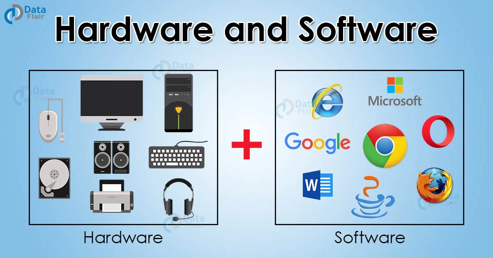

🛠️ Mantenimiento Preventivo: La Clave de tu Equipo
Tu recurso fundamental para asegurar longevidad, velocidad y eficiencia.
🛡️ Enfoque: Mantenimiento Preventivo
Este manual es tu recurso fundamental para asegurar la longevidad, velocidad y eficiencia de tu equipo de cómputo. El enfoque es el Mantenimiento Preventivo, la práctica de cuidar tu equipo antes de que ocurran fallas críticas.
¡ATENCIÓN! Evitarás el 80% de los problemas de rendimiento con una rutina sencilla.
La clave está en la periodicidad: el mantenimiento debe ser una costumbre, no una emergencia.

Fig. 1.1: El mantenimiento proactivo extiende la vida útil del hardware.

Fig. 1.2: Visión general de las áreas de mantenimiento de hardware y software.
🧠 Dominio de Mantenimiento
Tendrá el conocimiento para realizar tareas de mantenimiento lógico (software) y físico (hardware).
🔍 Diagnóstico Avanzado
Podrá diagnosticar la causa raíz de la lentitud y el sobrecalentamiento del sistema.
🗓️ Gestión de la Optimización
Implementará un calendario de limpieza y optimización trimestral.
🛡️ Protección de Datos
Disminuirá el riesgo de pérdida de datos por fallas de hardware relacionadas con el calor.
✅ Conclusión Final
“
El Mantenimiento Preventivo no es una opción, sino la filosofía operativa esencial para garantizar la
longevidad, velocidad y eficiencia de tu equipo de cómputo, actuando como el principal escudo contra el deterioro. Esta rutina periódica combina eficazmente la **limpieza física** (usando aire comprimido para mitigar el sobrecalentamiento, principal asesino del hardware) con la **optimización lógica** (gestionando el arranque y eliminando archivos temporales), lo que erradica la lentitud y el uso ineficiente de los recursos. Al adoptar este hábito, el usuario adquiere la autonomía para diagnosticar y mitigar el
de los problemas de rendimiento antes de que escalen a fallas críticas, transformando el cuidado del sistema de una
emergencia reactiva a una
costumbre proactiva y segura.
📖 Bibliografía y Recursos de Consulta
Estos recursos web son altamente recomendados por su calidad y profundidad para complementar tu aprendizaje sobre el mantenimiento preventivo y correctivo de equipos de cómputo.
1. Microsoft (Soporte Oficial)
2. Crucial/Intel (Guía de Hardware)
3. CCleaner (Centro de Aprendizaje)
4. ULPGC (Mantenimiento Básico)
👤 Equipo de Desarrollo y Edición
Este manual fue desarrollado bajo la guía de expertos en tecnología y sistemas informáticos para asegurar la máxima calidad y precisión de la información.
Elaborador Principal
[Nombre:Luis Miranda ]
[Cedula:30.186.217]
[Correo:mirandaluis1530@mail.com ]
Revisión Técnica
[Nombre:Nicolas Silva ]
[Cedula:31.756.453]
[correo:nicolassar14@gmail.com]
[Nombre:Barbara Bolivar ]
[Cedula:26.735.590]
[correo:mirandaluis1530@mail.com ]